An Amazon Music Design Challenge
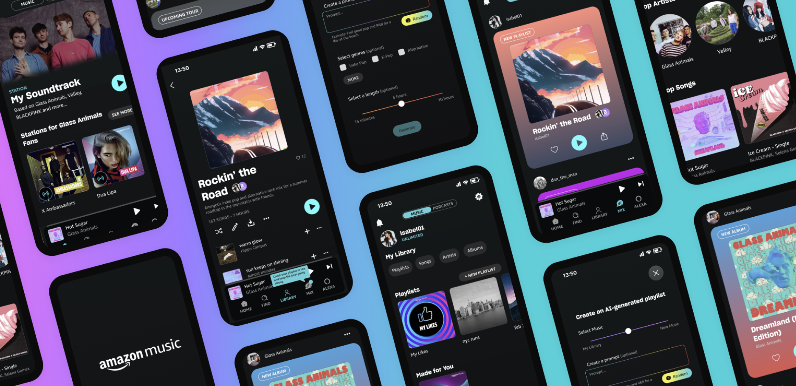
Amazon Music, Amazon's music streaming platform, provides an expansive music and podcast library to listeners. Using generative research methods, we explored users' goals and desires for the future of music-streaming. Our high fidelity prototype, validated with multiple rounds of user testing, incoporates a feature with which users can prompt their own AI-generated playlists, and a social feed called "Mix" to maximize personalization, delight, and efficiency of use on Amazon Music.
When: February 2023
Teammates: Alexis Li & Angela Li
My Role: writing survey questions, conducting user interviews, ideating, sketching, wireframing, prototyping, conducting remote usability tests, communicating designs
The Challenge
What is the future of the listener's experience with music and podcasts?
Look 3-5 years out to develop a concept that leverages Amazon Music's offerings and reach to bridge digital, in real life, communal, and individual experiences via the use of new devices and emerging technology.
Our Process
The design challenge lasted for 3 weeks, in which we had to cover our 3-stage process of research, ideation, and implementation. Each stage was optimized for efficiency in a short time frame, while striving for thoroughness in documenting data and design decisions.
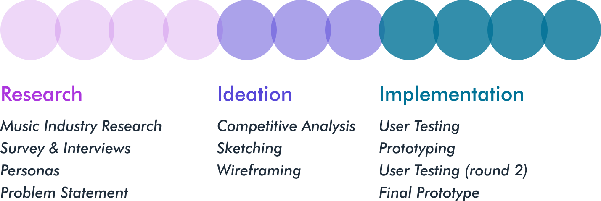
Research
Understanding Expectations

We decided to recruit young music lovers for our research
After familiarizing ourselves with Amazon Music's platform, we defined the target user group for this project as young adults who self-define as music lovers and regularly use a subscription-based music streaming service. This group selection was motivated by ease of recruitment during a short timeline. We also assumed that younger users would be most likely to adopt features with emerging technology, as required by the prompt from Amazon Music.
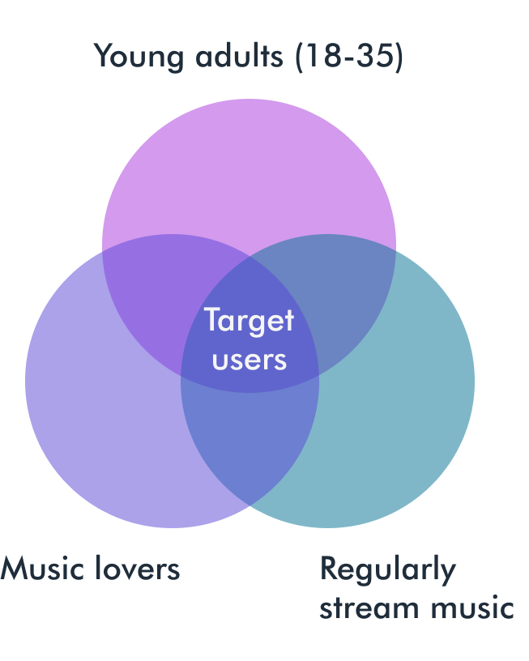
Next, we researched emerging trends in the music industry
In order to understand the near futures of music streaming, we researched current industry trends and emerging technology. This uncovered mostly AI features, like generative music and personalized suggestions. Virtual reality was also being discussed in the industry, although AI seemed to be the more dominant trend.
Playlists, personalization, and meaningful connections were central to participants’ music streaming experiences
We surveyed 22 young music lovers and conducted 6 semi-structured interviews about music streaming interests, behaviors, and pain points. The demographics of our 28 participants are shown below.
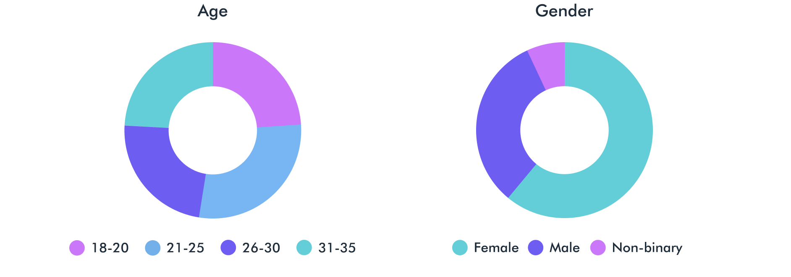
Our research into young music lovers' usage of music streaming platforms made clear their passion for music and its ability to connect them with friends and artists. There was a clear desire for personalization and connection expressed by our participants, but we learned that music streaming platforms are behind in meeting these expectations. Our participants believed that artist updates should be integrated into their personalized music streaming experience.
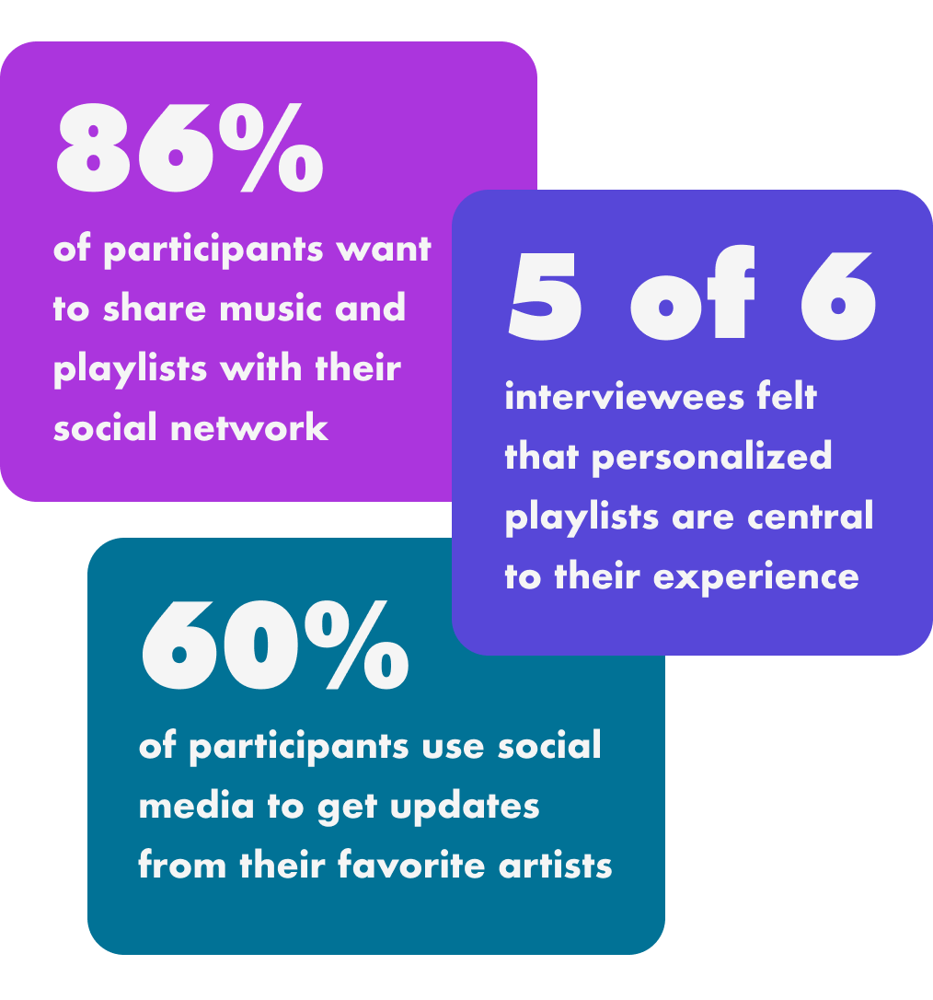
“I love making personalized playlists for people. I think about the person and their vibe, and if I need to know a little more about what they like, I simply ask what kind of vibe they're looking for.”
Two personas were created to capture the goals of connecting with friends and artists
Based on our research results and insights, we created two personas: one captured the goal of socializing via music streaming (Isabel), and the other captured the goal of connecting with artists (Daniel). Both personas reflect the need for personalization in the pursuit of these goals.
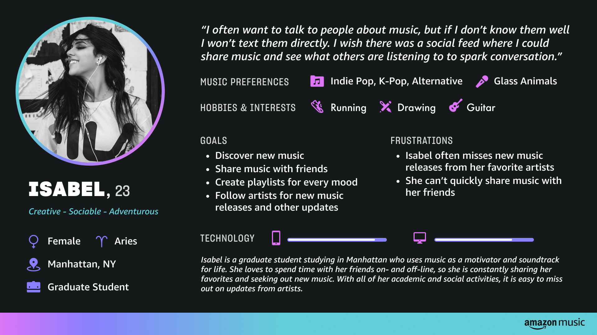
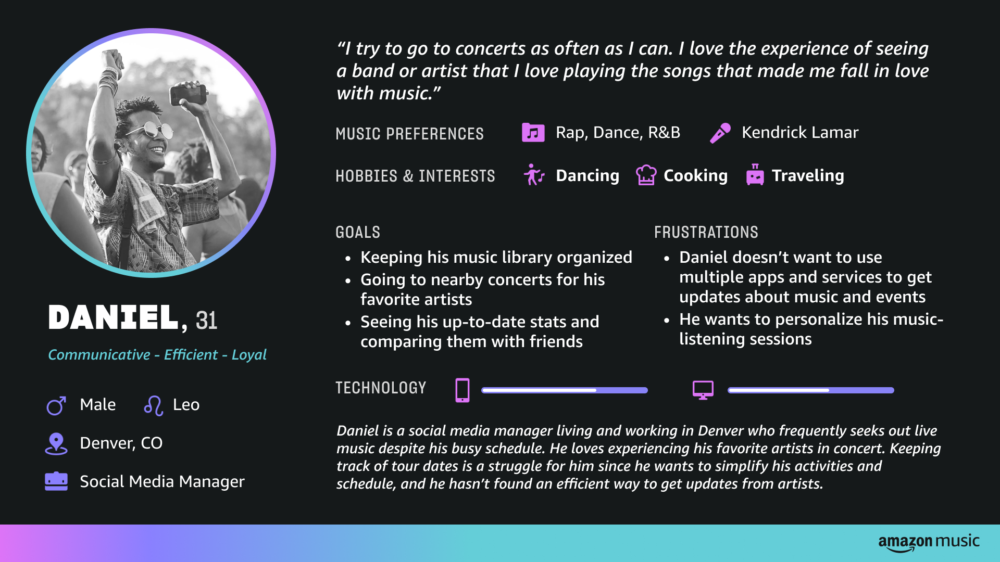
Our design problem aimed to solve for personalization and connectivity
We created a problem statement to guide the next stages of our design process. The themes articulated in our research findings and personas were personalization and connectivity; we asked how our solution might reflect these themes, keeping in mind the need to incorporate emerging technology.
Problem Statement
How might we help young music lovers on Amazon Music personalize their experience while connecting with their favorite artists and fellow users?
We recognized a conflict of expectations between our users and Amazon Music
Regarding emerging technology in music streaming, our interviewees were less enthusiastic. Most of them were more interested in their music streaming platforms getting up to speed with their expectations for personalization and connectivity. With an understanding of the conflict between what our users expressed and what Amazon Music's prompt expected from this project, moved into the ideation phase with the goal of reconciling the differences.
Ideation
Reconciling Differences
The goal of the ideation phase was to find a solution that would reconcile our research findings (that users want well-integrated personalization and connectivity features) with Amazon Music's prompt to incorporate emerging technology. We needed to balance the need to innovate with the obligation to reflect the voices of target users in our designs.
We analyzed how competitors integrate personalization, connectivity, and emerging technology into their experiences
Personalization, connectivity, and emerging technology were the themes of our exploration and problem, and motivated our choice of competitors for review. Apple Music and Spotify are major competitors of Amazon Music, but social networks and AI tools were also relevant to this analysis. We sought to capture how these platforms did or did not succeed at providing features of interest within our themes.
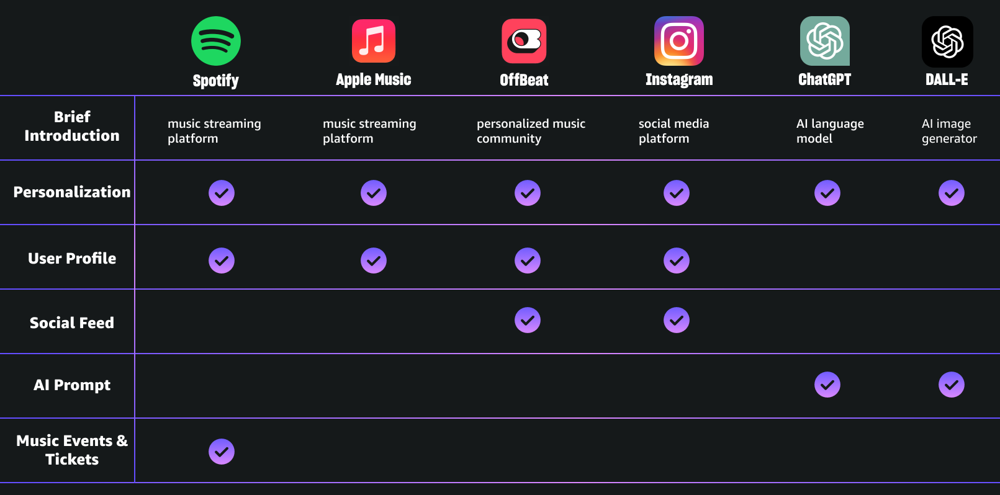
Then, we discovered a potential solution in the forms of an AI-generated playlist feature and social feed
With our research and competitive analysis in mind, we began to sketch and discuss ideas that might answer our users' needs while also incorporating emerging technology.
Two concepts became central to our discussion and designs: AI playlist prompts and a social feed.
Inspired by AI tools like DALL-E and ChatGPT, and by our research finding that personalized playlists are a core feature of music streaming, we imagined a flow in which users could prompt Amazon Music to create a playlist based on desired specifications. These could include a freeform prompt, new vs familiar music, genres, mood suggestions, and length.
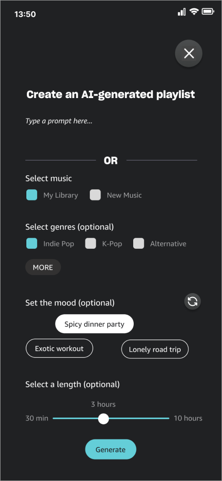
We also explored how AI-generated playlists from personalized prompts, in addition to other content, could be shared with friends on Amazon Music itself. We designed a social feed called “Mix” that would allow users to share content, interact with friends, and get updates from artists. As we wireframed, our flow included a way for AI-generated playlists to be shared to Mix upon creation.
Implementation
Refining Designs
We conducted moderated user tests with the goal of refining our AI-generated playlist feature
6 participants completed a task to create an AI-generated playlist with our wireframes, and answered follow-up questions on their perceptions of the feature and how they might use it in practice.
Overall, the feature was viewed positively, with all of our participants stating that they would love to have it available in their music-streaming service.
The tests also revealed that all participants liked the option to write a freeform prompt, but half of them wanted to see examples. Participants said they felt uncertain as to what they could write as a prompt.
“I would definitely use the prompt because I like to craft playlists with specific vibes.”
“It would be nice to see an example here like '80s music for spicy dinner party.’”
Because participants liked the flexibility of the prompt, but also wanted guidance, they struggled with the initial design that forced a choice between writing a prompt OR using presents for genre, length, and other aspects of their playlist.
What refinements were made to the designs?
Based on these findings, our final design for the AI playlist generator integrated prompt and presets. Presets allowed for flexibility in genres, a mix of new and old music, and playlist length. An example was included below the prompt field, as well as a button to randomly generate a prompt when creative inspiration was needed.
Our final prototype integrates the AI playlist feature and Mix feed into Amazon Music's existing app. It also features a playlist title and artwork generated by ChatGPT and DALL-E respectively to enhance the AI-generated playlist feature.
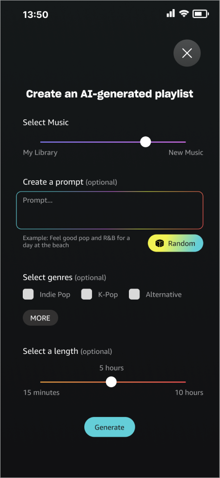
A second round of user testing improved navigation to Mix, the new social feed
5 participants completed a task to create a public AI-generated playlist, and then view it on their social feed. Follow-up interviews gave further insight into how they navigated and perceived the designs.
3 of our 5 participants had difficulty locating the Mix feed. This finding revealed a lack of feedback when a public playlist is posted to Mix, especially for a first-time use scenario. A notification badge within the global navigation was not salient enough to accomplish this.
We incorporated a tooltip for first time use to notify users that their playlist had been posted to the feed.
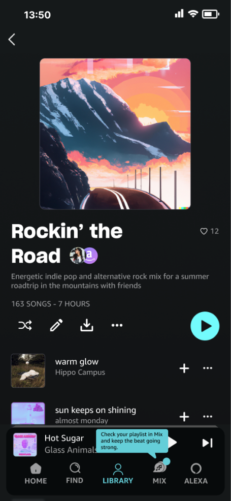
Our final design reflects our users' needs for personalization and connectivity, and Amazon Music's challenge to incorporate emerging technology
A presentation of our process and the final prototype were shared with judges from Pratt and Amazon Music.View the prototype here.
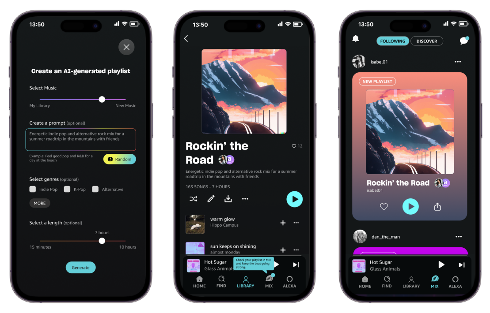
Future Opportunities & Reflection
Future opportunities for personalization in Amazon Music could include prompting new playlists with Alexa and remixing friends' playlists manually or with AI. Avenues for expanding social features might include options to post recommendations or current moods relating to music, commenting on or reposting content from friends, or collaborating on AI-generated playlists with friends. Artist and events updates could grow to include live-streamed or VR events and posting ticket purchases to encourage friends to attend events.
The major success of this project was that our user testing participants were genuinely excited about our designs. They were eager to provide feedback about how they would use an AI-generated playlist feature, and all expressed that they wished the feature existed on their current music-streaming apps. I appreciated the power in finding a truly representative sample for a user group: participants provided high quality feedback because the designs directly applied to them and their own goals. The quick turnaround for this project also challenged and ultimately improved my time management skills when working with a team.